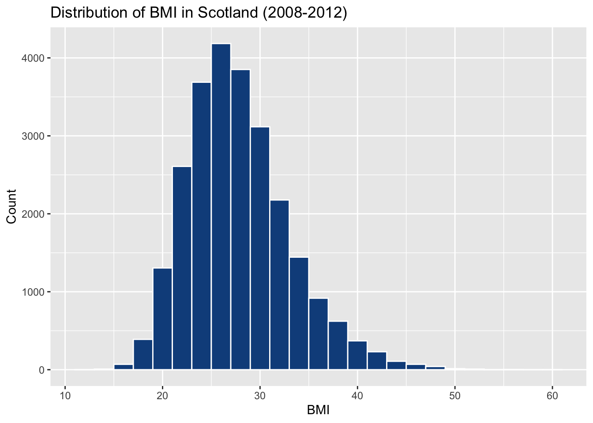
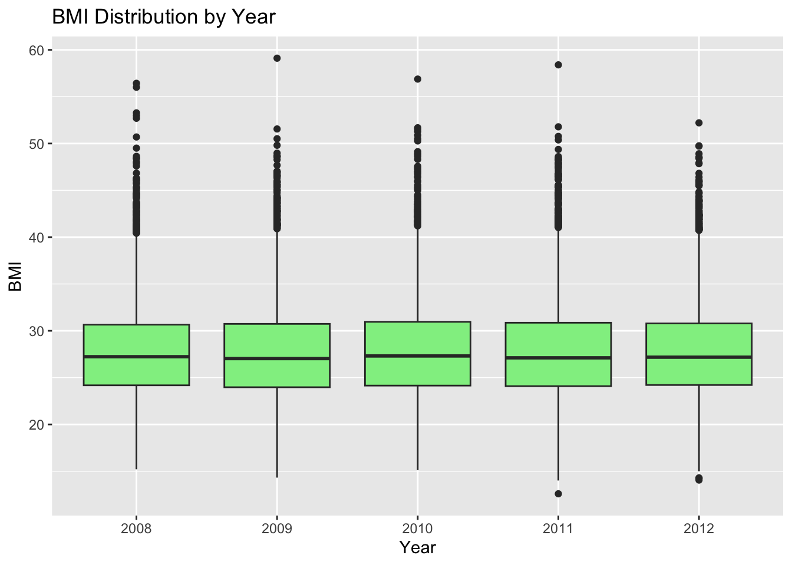
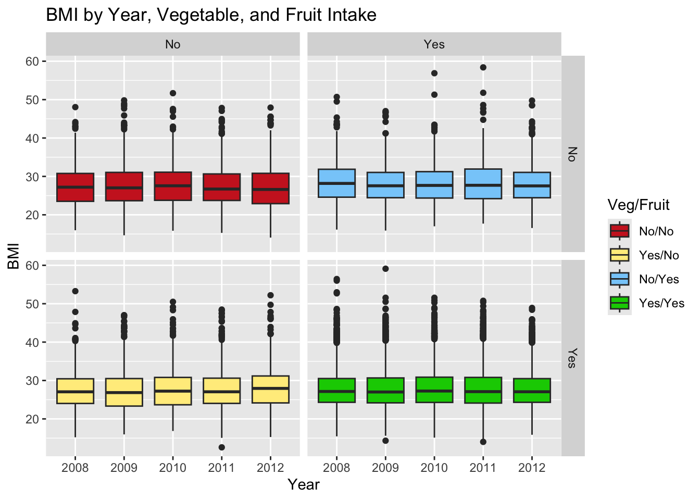
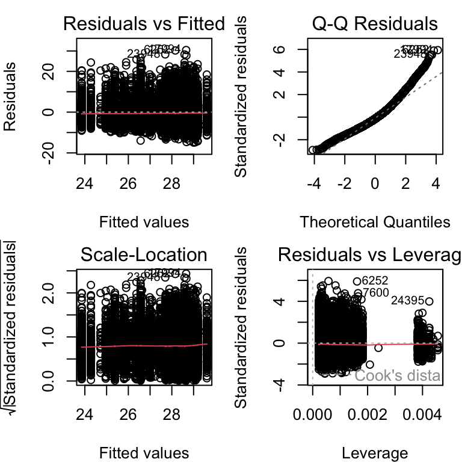
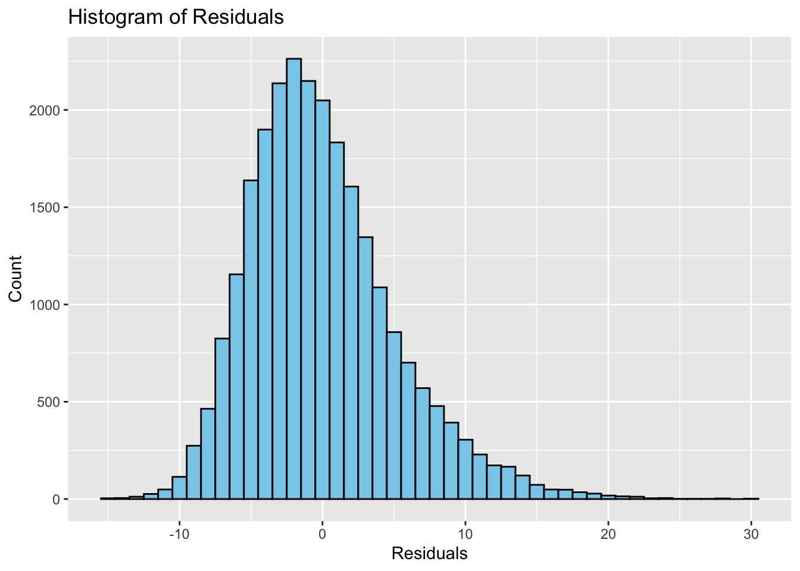

| Minimum | 1st Quartile | Median | Mean | 3rd Quartile | Maximum |
|---|---|---|---|---|---|
| 12.59 | 24.11 | 27.17 | 27.81 | 30.79 | 59.11 |
An In-Depth Insight into BMI in Scotland from 2008-2012
1 Introduction
Obesity health concerns are a major issue in Scotland impacting the healthy well-being of individuals across the country. The Body Mass Index (BMI) is a measure to assess weight-related health issues and is used widely across the world to provide insight into the population’s health. The Scottish Health Survey (2008-2012) demonstrates how social-economic and lifestyle factors may affect the BMI distribution of the Scottish Population. The survey (displayed in the DAProject8 dataset) uses factors such as Age, Sex, Employment status, Veg intake, Fruit intake and more to understand the relationship between social-economic, lifestyle factors and health outcomes of the Scottish population. Here, we shall analyse these relationships and conclude whether there has been a difference in BMI distribution in Scotland over the given years.
2 Exploratory Data Analysis
Here, we summarise BMI patterns and visualise distributions to investigate changes over time and differences by another factor, in diet (specifically Fruit and Veg intake). This will allow us to inform our Formal Analysis in Section 3, by checking normality and variance assumptions.
2.1 Summary Statistics
Table 1 depicts the interquartile range, overall range and central tendency of the BMI in the time frame.
From Table 1, we can see that the interquartile range is significantly narrower than the overall range from the minimum to maximum values observed, suggesting that there may be potential outliers present in the data - especially at the towards the maximum observed value.
Table 2 tracks changes in the mean, median, standard deviation, and sample size over our time frame.
| Year | Mean | Median | Std. Dev | Sample Size |
|---|---|---|---|---|
| 2008 | 27.79 | 27.23 | 5.16 | 4,897.00 |
| 2009 | 27.72 | 27.03 | 5.25 | 5,721.00 |
| 2010 | 27.88 | 27.31 | 5.25 | 5,467.00 |
| 2011 | 27.84 | 27.11 | 5.36 | 5,464.00 |
| 2012 | 27.83 | 27.18 | 5.25 | 3,675.00 |
As we can see, Table 2 shows that both the mean and median BMI remains between 27 and 28 across 2008-2012. Similarly, standard deviations remain approximately constant, indicating no clear trend over time but consistent variability.
2.2 Assessing Normality
Figure Figure 1 displays the overall BMI distribution.

Our distribution appears to be reasonably bell-shaped though slightly right-skewed, suggesting the presence of potential non-normality brought about by outliers found at higher BMI values.
2.3 BMI Over Time
Figure 2 shows our BMI distribution by Year.

As displayed in Figure 2, our distributions appear similar throughout, with some outliers above 50 appearing every year, indicating again, that there are no major change over 2008-2012.
2.4 Differences Observed by Diet
Figure 3 facets BMI by Veg and Fruit intake across years, which allows us to assess diet effects over time.

As can be observed in Figure 3, the BMI distributions remain similar when Veg intake is or is not present, no matter what the Fruit intake is. We can see that there is potentially a slightly higher BMI associated with both Veg and Fruit being present in the diet, as the maximum values are generally slightly higher compared to our other combinations of diet; however, we can note that most of the data under this combination is still found within a similar region to the other Veg/Fruit intake combinations.
3 Formal Analysis
We start by fitting the full multiple regression model containing all explanatory variables. The full model can be written as:
\[ \begin{align} y_{i} &= \alpha + \beta_{AgeGroup} \cdot \mathbb{I}_{AgeGroup}(x) + \beta_{Sex} \cdot \mathbb{I}_{Sex}(x) + \beta_{Employment} \cdot \mathbb{I}_{Employment}(x) + \\ & \quad \beta_{Veg}\cdot \mathbb{I}_{Veg}(x)+ \beta_{Fruit} \cdot \mathbb{I}_{Fruit}(x) + \beta_{Year} \cdot \mathbb{I}_{Year}(x) + \epsilon_i, \\ & ~~~~ \epsilon_i \sim N(0, \sigma^2), ~~~~ i=1,\ldots,n \\ \end{align}\]
where:
\(\alpha\) is the intercept of the regression line for the baseline of
FruitandVegbeing ‘no’.\(\beta_{AgeGroup}\) is the intercept of the regression line for the specified
Agegroup.\(\mathbb{I}_{AgeGroup}(x)\) is an indicator function indicating the
Agegroup.- \(\mathbb{I}_{AgeGroup}(x)\) is an indicator function indicating the
Agegroup.
- \(\mathbb{I}_{AgeGroup}(x)\) is an indicator function indicating the
\(\beta_{Sex}\) is the intercept of the regression line for the specified
Sex.- \(\mathbb{I}_{Sex}(x) = \begin{cases} 1&\mbox{for male} \\ 0&otherwise \end{cases}\)
\(\beta_{Employment}\) is the intercept of the regression line for the specified
Employmentstatus.- \(\mathbb{I}_{Employment}(x)\) is an indicator function indicating the
Employmentstatus.
- \(\mathbb{I}_{Employment}(x)\) is an indicator function indicating the
\(\beta_{Veg}\) is the intercept of the regression line for the specified
Vegintake.- \(\mathbb{I}_{Veg}(x) = \begin{cases} 1&\mbox{for yes} \\ 0&otherwise \end{cases}\)
\(\beta_{Fruit}\) is the intercept of the regression line for the specified
Fruitintake.- \(\mathbb{I}_{Fruit}(x) = \begin{cases} 1&\mbox{for yes} \\ 0&otherwise \end{cases}\)
\(\beta_{Year}\) is the intercept of the regression line for the
Year.- \(\mathbb{I}_{Year}(x)\) is an indicator function indicating the
Year.
- \(\mathbb{I}_{Year}(x)\) is an indicator function indicating the
\(\epsilon_i\) represents normally distributed errors.
3.1 Stepwise Regression
To refine the model, since there are so many variables, we apply stepwise regression with backward selection in order to reduce the model based on the Akaike Information Criterion (AIC). In doing this, we aim to identify the best-fitting model. The stepwise selection process determines whether all predictors should be included or if a reduced model provides a better fit. In this case, the final model has the lowest AIC of 82517.56 and thus, is the chosen model.
The final regression model results are summarised in Table 3. This provides estimates of the regression model coefficients, showing which factors significantly impact BMI.
| term | estimate | std_error | statistic | p_value | lower_ci | upper_ci |
|---|---|---|---|---|---|---|
| intercept | 25.144 | 0.338 | 74.481 | 0.000 | 24.483 | 25.806 |
| AgeGroup: 25-34 | 1.181 | 0.156 | 7.584 | 0.000 | 0.876 | 1.486 |
| AgeGroup: 35-44 | 2.506 | 0.152 | 16.527 | 0.000 | 2.208 | 2.803 |
| AgeGroup: 45-54 | 2.777 | 0.151 | 18.353 | 0.000 | 2.480 | 3.073 |
| AgeGroup: 55-64 | 3.286 | 0.158 | 20.855 | 0.000 | 2.977 | 3.595 |
| AgeGroup: 65-74 | 3.211 | 0.192 | 16.683 | 0.000 | 2.834 | 3.588 |
| AgeGroup: 75+ | 2.351 | 0.213 | 11.042 | 0.000 | 1.934 | 2.768 |
| Employment: In full-time education | −0.866 | 0.360 | −2.406 | 0.016 | −1.571 | −0.161 |
| Employment: In paid employment, self-employed or on gov't training | 0.662 | 0.313 | 2.113 | 0.035 | 0.048 | 1.276 |
| Employment: Looking after home/family | 0.471 | 0.336 | 1.400 | 0.162 | −0.188 | 1.130 |
| Employment: Looking for/intending to look for paid work | 0.238 | 0.362 | 0.657 | 0.511 | −0.472 | 0.947 |
| Employment: Perm unable to work | 1.178 | 0.347 | 3.398 | 0.001 | 0.499 | 1.858 |
| Employment: Retired | 0.651 | 0.331 | 1.967 | 0.049 | 0.002 | 1.300 |
| Veg: Yes | −0.424 | 0.079 | −5.350 | 0.000 | −0.579 | −0.268 |
As displayed in Table 3, BMI increases with Age, with all age groups showing statistically significant positive estimates compared to the reference group (18-24). The largest increase peaks in the 55-64 age group in BMI and then decreases in the 75+ group.
With respect to Employment status, the overall trend suggests that for those who are in full-time education, BMI tends to be lower than those who are permanently unable to work - which is illustrated to result in an increase in 1.178 in BMI on average. Both Looking after home/family and Looking for/intending to look for paid work are not statistically significant in influencing BMI. Also, with respect to lifestyle factors, meeting the recommended Veg consumption significantly decreases the BMI - which emphasises the importance of eating vegetables in weight management.
3.2 Model Assumptions
To ensure that regression assumptions hold, we analyse residuals depicted in Figure 4 below.

The residual plots help check for normality, homoscedasticity, and potential outliers, all of which appear satisfied in this case.
To confirm the validity of model assumptions, we visualise the normality of the residuals in Figure 5 below.

Figure 5 verifies that the residuals are approximately normally distributed as it is bell-shaped and centered at zero.
3.3 Interaction Effects
We test for interactions between Sex and Employment, and Veg and Fruit intake to explore whether dietary factors interact with employment status or gender.
| ANOVA Comparison of Models | |||||
|---|---|---|---|---|---|
| Stepwise vs. Interaction Model | |||||
| Residual DF | Residual Sum of Squares | Degrees of Freedom | Sum of Squares | F Statistic | p-value |
| 25210 | 663,863.45 | NA | NA | NA | NA |
| 25192 | 662,926.25 | 18 | 937.20 | 1.98 | 0.0079 |
The ANOVA test assesses whether including interaction terms significantly improves our model fit.
As we can see in Table 4, the model which included the interaction terms did, in fact, exhibit a significant improvement on our model fit (as can be seen with our p-value being <0.05).
4 Conclusions
As we can see from Table 2 and Figure 2 the BMI remained somewhat stable between years 2008-2012, with no significant yearly changes. Thus, time did not have a significant impact on BMI.
However, in Section 3, we found that several lifestyle and demographic factors do, indeed, influence BMI. We can see that BMI significantly increases as Age increases generally; and the 55-64 age range generally saw the largest increase. Further, with regards to Employment, we can say that if you are actively in work your BMI generally decreases. In addition, those who are not currently in employment have a higher BMI distribution. When it comes to lifestyle choices, our analysis suggests that consuming the recommended amount of Veg, showed a significant decrease on BMI.
Hence, lifestyle and social-economic factors do have a significant effect on the BMI distribution.
As over a decade has passed since the survey in which our findings relate to, our conclusions may be subject to change; due to an increase in promotion of good health and BMI awareness in society. Hence, a new survey may provide a better reflection of the current state of affairs with regards to BMI in the Scottish population.